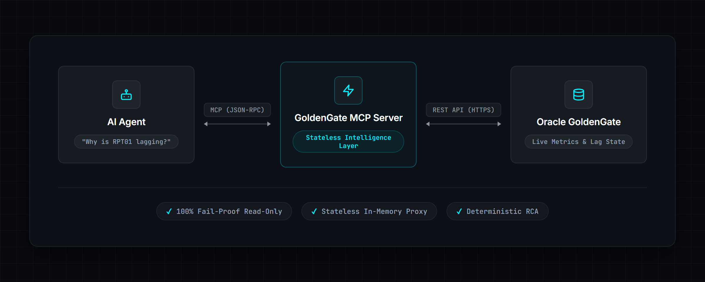

Automating Oracle GoldenGate Root Cause Analysis with AI Agents

If you’ve ever managed an enterprise data pipeline, you know the sinking feeling of getting a
PagerDuty alert at 3:00 AM: “Production Oracle GoldenGate Replicat RPT01 is 45 minutes
behind.”
Oracle GoldenGate is the gold standard for real-time data replication, but troubleshooting it often
feels like reading tea leaves. You jump into the OCI Dashboard (if you’re lucky enough to have it
configured) or start desperately tailing ggserr.log. You check the source database, you
check the target, you look at discard rates and you try to mentally calculate if the current lag is
a temporary network blip or a systemic failure.
It’s manual, stressful work and doesn't scale in a modern DevOps environment.
I realized with the frontier AI at my dispospal and a proper harness around it, I could just ask my system: "Why is RPT01 lagging on production?" and get a straight, deterministic answer. By bridging Oracle GoldenGate with AI Agents using the Model Context Protocol (MCP), I’ve transformed GoldenGate from a black-box replication engine into a conversational, self-diagnosing system.
Here is a deep dive into the architecture, security, and strategy behind this Oracle GoldenGate MCP server.
The Challenge: Enterprise Reality Meets AI Hype
We’ve all seen the impressive demos of Large Language Models (LLMs) writing code or summarizing PDFs. But when it comes to enterprise operations, there is a massive gap between the hype and the reality.
The biggest problem with LLMs in DevOps is that if they don't have hard data, they guess. In a production database environment, guessing is dangerous. If you simply give an LLM raw terminal access, it might confidently tell you to restart a Replicat when the actual issue is a locked table on the target database.
To make AI actually useful for GoldenGate DBAs, I needed a solution that provided three things:
- Context Access: The AI needs real-time access to GoldenGate’s internal state.
- Stateless Integration: Enterprise environments don't want another heavy monitoring agent storing gigabytes of metrics.
- Safety: The AI must operate in a strictly read-only mode by default, with an audit trail that detects tampering.
The Missing Link: The Model Context Protocol
Enter the Model Context Protocol (MCP). MCP is an open standard introduced by Anthropic that allows AI assistants to securely interact with local tools and data sources. Think of it as USB-C for AI: a universal plug that connects the reasoning power of an LLM to the specific, proprietary data of your enterprise.
Instead of giving the AI raw API access and hoping for the best, I built the MCP server to act as a structured intelligence layer. It translates the chaotic reality of an Oracle GoldenGate deployment into clean, deterministic facts that the AI can understand.
Building for Production: Curing Hallucinations
When the AI asks for the health of a deployment, the server reaches out to the GoldenGate Microservices REST API and pulls live data like throughput, lag seconds, discard rates, and recent errors. Instead of handing the AI a massive, unreadable JSON blob, I parse and structure it.
Because the AI receives these structured facts, it doesn't have to guess. It synthesizes the live data and provides a highly accurate, human-readable response. It looks something like this:
"Replicat RPT01 is experiencing 2,700 seconds of lag. The discard rate has spiked, and the recent warnings indicate a constraint violation on the target database preventing rows from applying."
Connecting the Client
Configuring the MCP server for a local LLM client is remarkably straightforward. Here is an example
of what the config.json looks like to connect to a GoldenGate microservices
deployment:
{
"mcpServers": {
"goldengate": {
"command": "python",
"args": ["-m", "goldengate_mcp_server"],
"env": {
"GG_READ_ONLY": "true",
"GG_DEPLOYMENT_1_NAME": "gg_prod_sample",
"GG_DEPLOYMENT_1_URL": "https://gg-server:9000",
"GG_DEPLOYMENT_1_USERNAME": "oggadmin",
"GG_DEPLOYMENT_1_PASSWORD": "your-password",
"GG_DEPLOYMENT_1_VERIFY_SSL": "true"
}
}
}
}Strategy Beyond the Code
Building the technical integration was only half the battle. Making it an enterprise-ready tool that security teams would actually approve required strategic design decisions.
Stateless is Beautiful
My first thought was to build a heavy monitoring agent that stored gigabytes of metrics. But enterprise environments hate that. They don't want another database to manage.
So I made a strict design decision: The server will be completely stateless out of the box.
By default (GG_ENABLE_METRICS=false), the MCP server stores absolutely nothing on disk.
It acts solely as a real-time, in-memory REST pass-through layer. It's incredibly lightweight. If
you want predictive baselining (knowing that 300 seconds of lag is exactly 5 standard deviations
above normal), you can enable the optional SQLite metrics store, but it's completely opt-in.
The Security Conundrum: 100% Fail-Proof Read-Only
How do you ensure an AI doesn't accidentally restart a production database process? You don't trust the AI. You enforce it in the Python server layer.
The server ships with GG_READ_ONLY=true by default, and it is enforced twice. First, the
write tools are never advertised. When the AI asks what tools exist, the registry filters them out,
so as far as it can tell start_extract doesn't exist:
def all_tools(*, enable_metrics: bool = True, read_only: bool = False) -> List[Tool]:
tools = [*DEPLOYMENT_TOOLS, ..., *WRITE_TOOLS, ...]
if not enable_metrics:
... # drop the metrics-dependent tools
if read_only:
tools = [t for t in tools if t.name not in WRITE_TOOL_NAMES]
return [_annotate(t) for t in tools]But hiding a tool only helps with well-behaved clients: nothing stops a client from calling a tool
by name even if it was never listed. So I also hardcoded a block in the routing logic. If the AI
somehow attempts to call start_extract anyway, it hits a literal wall in my
WriteMixin class:
async def _handle_write_operation(self, operation: str, arguments: Dict[str, Any]):
if self.config.read_only:
logger.warning("Write operation %s blocked: server in read-only mode", operation)
return {
"error": "Write operation blocked",
"reason": "Server is running in read-only mode",
"operation": operation,
}
# Actual REST call happens down here...The AI is completely sandboxed. It can’t bypass the Python execution layer to inject write commands. It also generates a redacted audit log for every single tool call, so you always know exactly what the agent looked at.
That audit log is hash-chained. Each entry carries a sequence number, the SHA-256 hash of the entry
before it, and its own hash, and the chain carries on across restarts and log rotation. Edit,
delete or reorder an entry and the chain breaks at that point; verify_audit_log()
tells you which line. It's tamper-evident.
What Success Looks Like
By implementing this MCP server, we transform the daily workflow of a goldengate administrator. The benefits are tangible:
- Faster Problem Resolution: What used to take 20 minutes of digging through logs now takes a single prompt so maybe 2 mins tops.
- Reduced Cognitive Load: DBAs no longer need to memorize complex REST API endpoints or navigate clunky UIs.
- Democratized Diagnostics: Junior engineers can perform complex root-cause analysis by simply asking the AI, leveling up the entire team.
- LLMs with Constraints: You feed the AI highly deterministic, pre-parsed facts so it can focus on reasoning, not data extraction.
The Bigger Picture
Building this Oracle GoldenGate MCP server fundamentally changed how I view infrastructure monitoring. We are moving away from passive dashboards that just show us symptoms (like a red light flashing because lag is high) toward context-aware, diagnostic systems that can actually tell us why the light is red.
Summary
The era of manually parsing database logs at 3:00 AM is ending. By leveraging MCP and frontier intelligence, we can safely and securely bridge the gap between enterprise infrastructure and advanced AI reasoning.
You can check out the source code for the Oracle GoldenGate MCP server and run it yourself from the GitHub repository. Hopefully, it saves you from a few 3:00 AM pagers.
If you enjoy deep dives into solving niche development problems, check out my other post on Building the LookStuffUp Extension!